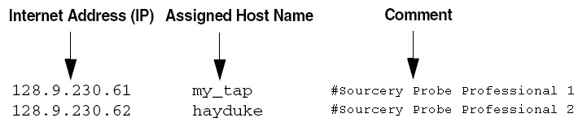
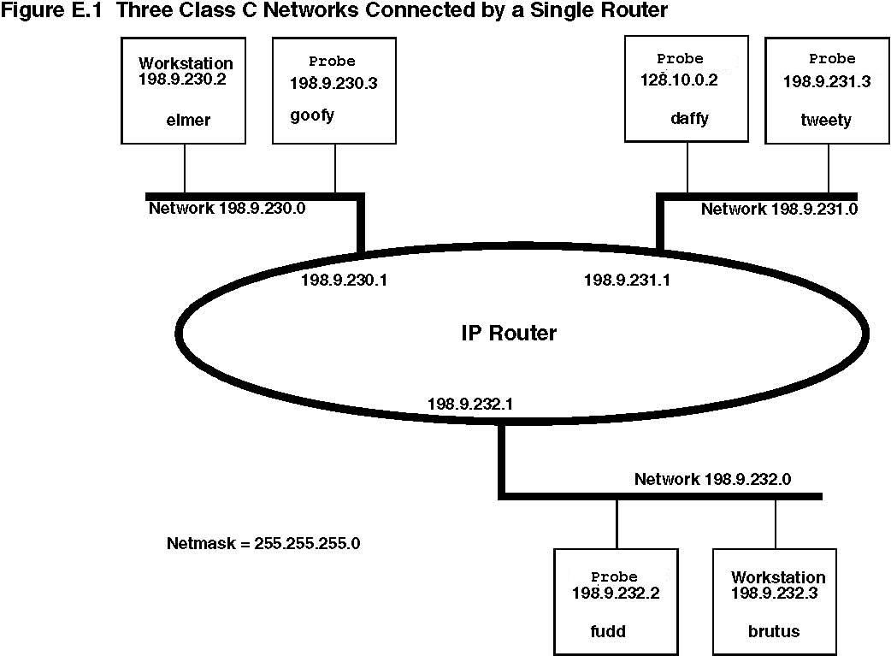

Use the netparam command to select the network parameters:
| Caution | |
|
netparam writes its settings into non-volatile flash memory on the probe. Each time you enter a netparam command, wait for the core> prompt to re-appear before entering the next command. |
|
To configure a dynamic IP address, perform these steps.
Procedure
netparam bootconfig dhcp[:hostname]
DHCP is the default setting. If you specify a hostname for the probe, the probe will attempt to register the host name with the DHCP server, that will then update any name servers on the network.
This section covers the set up of a static IP address for the Sourcery Probe Professional. If you are unfamiliar with IP address concepts, refer to the section Step-by-Step Guide to Configuring a Static IP.
| Note | |
|
Because this is a proven method to add a probe to a TCP/IP network, we recommend using it if you have any network communication problems. |
|
To enter the IP and optional netmask in flash, perform the following steps.
Procedure
Example B‑1. Probe Entries in a hosts File for a Windows Host Environment
| Note | |
|
You should create or update the hosts file on the network server or on each local workstation that requires access to the probe. |
|
netparam static_ip_address nnn.nnn.nnn.nnn
[:mmm.mmm.mmm.mmm]
Where nnn.nnn.nnn.nnn represents the IP address and mmm.mmm.mmm.mmm represents the subnet mask.
The simplest networks consist of one or more subnets. Routers forward network traffic from one point on the network to another across these subnets.
If the probe uses DHCP to automatically acquire its network settings, it is most likely that a default gateway setting was acquired and the probe will be accessible on other subnets.
However, when using a static IP configuration or where the DHCP configuration is incomplete, you might need to provide additional routing information, including:
If you are using a static IP configuration, or your DHCP configuration does not specify a default gateway, you can manually enter the IP address of the default gateway to use. This gateway must be accessible on your local subnet.
A default gateway entry must specify the IP address of the first gateway that network traffic from the probe crosses. Failing to specify gateway information can cause problems with the probe's discovery feature. This gateway must be aware of the network’s complete route table. Use the following netparam syntax:
netparam add_route 0.0.0.0 gateway_ip 1
For gateway_ip, provide the IP address of the router or gateway in dot notation. The default value is 0.0.0.0.
| Note | |
|
If you enter static routes in the probe, they are not updated automatically. You must update these routes if changes in the network topology affect the static routes. |
|
Before entering static routes, make a map of all gateway paths between the probe, as a starting point, and each workstation that must have access to it.
To change an existing routing entry. perform the following steps.
Procedure
netparam delete_route host_ip
netparam add_route host_ip gateway_ip hop_#
| Note | |
|
When you enter static routes into the probe, static routes are not updated automatically. You must update these routes if changes in network topology affect the static routes. |
|
Before entering static routes, make a map of all gateway paths between the probe, as a starting point, and each workstation must have access to it.
To enter a static route or default gateway, perform the following steps.
Procedure
netparam add_route host_ip gateway_ip hop_#
NOTE: Wait for the core> prompt between each netparam entry.
Example B‑2. Static Route Example
Figure B‑1 shows three class “C” networks joined together by a single IP router, making each probe accessible from three workstations (elmer, tweety, and brutus).
Figure B‑1.  Example Network with 1 Router
No static routing information is required to make a probe accessible from a workstation local to it on a network. For example, the probe goofy on network 198.9.230.0 communicates directly with workstation elmer.
When static routing is used, a routing entry is required on a probe for each workstation on a non-local network that accesses it. The probe goofy requires two entries, one for workstation tweety on network 198.9.231.0 and one for workstation brutus on network 198.9.232.0.
Each static route entry is made using a netparam command and consists of a network address and a host address. The netparam commands for the static route entries for probe goofy are:
netparam add_route 198.9.231.0 198.9.230.1 1
netparam add_route 198.9.232.0 198.9.230.1 1
Each of the three probe hosts must have a static route entry for each remote workstation that accesses it.
To delete a static route, use the netparam command:
core> netparam delete_route 1
SIOCADDRT: Network is unreachable
core> netparam
ethernet_address = 00:04:9F:00:FF:80
bootconfig = static:MEGJ
static_ip_address = 192.168.0.201:255.255.255.0
static_dns_server = 0.0.0.0
static_hosts = <none>
static_routes = destination gateway metric
--------------- --------------- ------
default 134.86.179.254 1
core> netparam delete_route default
core> netparam
ethernet_address = 00:04:9F:00:FF:80
bootconfig = static:MEGJ
static_ip_address = 192.168.0.201:255.255.255.0
static_dns_server = 0.0.0.0
static_hosts = <none>
static_routes = <none>
core>